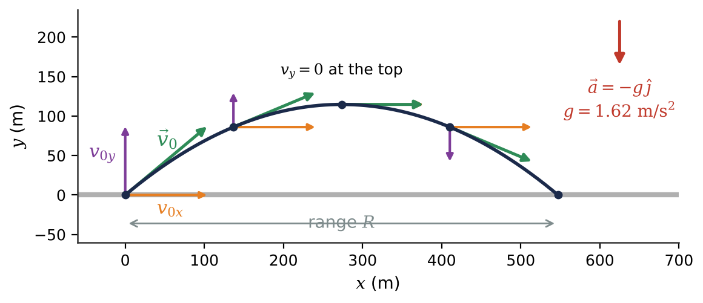
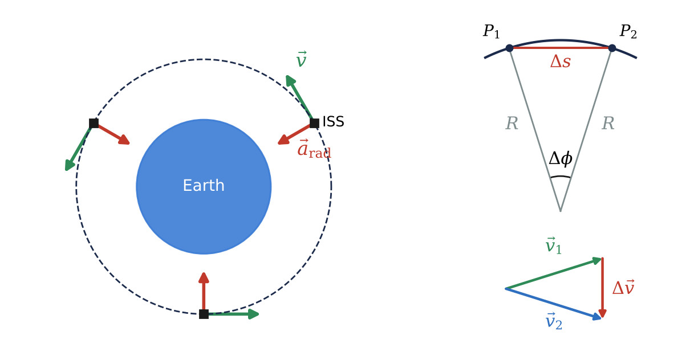
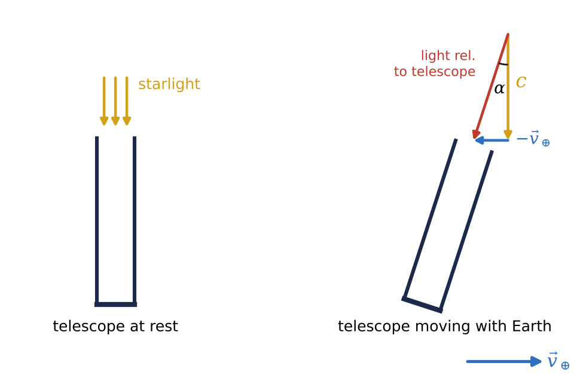

🎯What you will learn
By the end of this module, you can:
- Find position, displacement, average and instantaneous velocity vectors, and explain why velocity is tangent to the path.
- Split an acceleration into parts parallel and perpendicular to the velocity and say what each part does.
- Solve projectile problems on any world by treating horizontal and vertical motion independently.
- Compute centripetal acceleration for orbits and rotating bodies, and combine velocities between reference frames (including aberration of starlight).
3.1Position and Velocity Vectors
With an origin and axes chosen (Earth's centre for a satellite, the lander for a rover), a point is located by its position vector \(\vec{r} = x\hat{\imath} + y\hat{\jmath} + z\hat{k}\). Its magnitude is the distance from the origin; for a satellite that is altitude plus Earth's radius, 6371 km.
The displacement is \(\Delta\vec{r} = \vec{r}_2 - \vec{r}_1\), and the average velocity is \(\vec{v}_{\text{av}} = \Delta\vec{r}/\Delta t\). It points along the displacement and depends only on the endpoints: a rover that zigzags for an hour and ends 50 m north of its start has \(\vec{v}_{\text{av}}\approx 0.014\) m/s due north.
Letting \(\Delta t\to 0\) gives the instantaneous velocity \(\vec{v} = d\vec{r}/dt\). Key fact: the velocity vector is always tangent to the path. In components,
\[v_x = \frac{dx}{dt},\quad v_y = \frac{dy}{dt},\quad v_z = \frac{dz}{dt}.\]
So each coordinate behaves like a separate one-dimensional problem from Chapter 2. This independence of the \(x\), \(y\) and \(z\) motions is the single most useful idea in this chapter. The speed is \(v = \sqrt{v_x^2 + v_y^2}\) and the direction follows from \(\tan\alpha = v_y/v_x\) (check the quadrant!).
3.2The Acceleration Vector
In two or three dimensions, a body accelerates whenever its velocity vector changes: in magnitude, in direction, or both. A probe swinging past Jupiter at nearly constant speed is accelerating because its direction is changing.
The average acceleration is \(\vec{a}_{\text{av}} = \Delta\vec{v}/\Delta t\) and the instantaneous acceleration is \(\vec{a} = d\vec{v}/dt\), with \(a_x = dv_x/dt = d^2x/dt^2\) and so on. Unlike velocity, \(\vec{a}\) is generally not tangent to the path; on a curve it always has a part pointing toward the concave (inner) side.
It helps to split \(\vec{a}\) into a part parallel to \(\vec{v}\) and a part perpendicular to it. If \(\phi\) is the angle between them:
- \(a_\parallel = a\cos\phi\) changes the speed: \(dv/dt = a_\parallel = \vec{a}\cdot\vec{v}/v\).
- \(a_\perp = a\sin\phi\) changes the direction, bending the path.
A comet shows all three cases with one acceleration that always points at the Sun. Inbound, \(\phi < 90°\) and it speeds up; near perihelion the pull is nearly perpendicular and mostly swings it around; outbound, \(\phi > 90°\) and it slows down. If \(\vec{a}\) is always perpendicular to \(\vec{v}\), the speed never changes, as in a circular orbit.
3.3Projectile Motion
A projectile moves under gravity alone after launch: a golf ball on the Moon, a rock thrown on Mars, a boulder blasted out of a crater. On airless bodies the ideal model is essentially exact. With \(+y\) up and \(+x\) horizontal, \(a_x = 0\) and \(a_y = -g\): uniform horizontal motion and free-fall vertical motion, linked only by the shared time \(t\). Launched from the origin at speed \(v_0\) and angle \(\alpha_0\):
\[x = (v_0\cos\alpha_0)t,\qquad y = (v_0\sin\alpha_0)t - \tfrac{1}{2}gt^2\]
\[v_x = v_0\cos\alpha_0,\qquad v_y = v_0\sin\alpha_0 - gt.\]
The path is a parabola. When it lands at its launch height, the maximum height and range are
\[H = \frac{v_0^2\sin^2\alpha_0}{2g},\qquad R = \frac{v_0^2\sin 2\alpha_0}{g}.\]
Both scale as \(1/g\): on the Moon, with about one-sixth of Earth's gravity, the same shot flies six times higher and farther. The range is largest at 45°, and complementary angles (30° and 60°) give equal ranges. Planetary geologists run \(R\) backwards to estimate the launch speeds of crater ejecta that form the bright rays around craters like Tycho.

3.4Motion in a Circle
In uniform circular motion (constant speed on a circle) the speed does not change but the direction does, so there is an acceleration pointing toward the centre: the centripetal or radial acceleration. Using the period \(T\) (time for one revolution):
\[a_{\text{rad}} = \frac{v^2}{R},\qquad v = \frac{2\pi R}{T},\qquad a_{\text{rad}} = \frac{4\pi^2R}{T^2}.\]
For the ISS (\(R = 6791\) km, \(T = 92.9\) min), \(v = 7.66\) km/s and \(a_{\text{rad}} = 8.63\) m/s², almost exactly \(g\) at that altitude. Astronauts float not because gravity is absent but because they and the station fall around Earth together. Newton noticed that the Moon's \(a_{\text{rad}} = 2.72\times10^{-3}\) m/s² is about 1/3600 of \(g\), and the Moon is about 60 Earth radii away: an inverse-square clue to gravitation.
Every observatory moves in a circle of radius \(R_\oplus\cos\lambda\) at latitude \(\lambda\), once per sidereal day (86 164 s), with acceleration toward the rotation axis (0.0339 m/s² at the equator). If the speed also changes (nonuniform circular motion, e.g. a centrifuge spinning up), add a tangential component \(a_{\text{tan}} = dv/dt\); the total is \(a = \sqrt{a_{\text{rad}}^2 + a_{\text{tan}}^2}\).

3.5Relative Velocity
Velocity is always measured relative to a frame of reference. The ISS moves at 7.66 km/s relative to Earth's centre, at zero relative to an astronaut inside, and near 30 km/s relative to the Sun. For a body \(P\) and frames \(A\) and \(B\):
\[\vec{v}_{P/A} = \vec{v}_{P/B} + \vec{v}_{B/A},\qquad \vec{v}_{A/B} = -\vec{v}_{B/A}.\]
The inner subscripts “cancel”. A cargo capsule creeping toward the ISS at 0.20 m/s moves at 7660.20 m/s relative to Earth; docking is gentle because only the tiny difference matters. To see how a comet moves as seen from Earth, subtract Earth's orbital velocity: \(\vec{v}_{C/E} = \vec{v}_{C/S} - \vec{v}_{E/S}\).
The aberration of starlight, discovered by James Bradley in 1725-1728, is pure relative velocity. Like tilting an umbrella forward when walking through vertical rain, a telescope moving with Earth must be tilted forward by an angle \(\alpha\) with
\[\tan\alpha = \frac{v_\oplus}{c},\]
where \(v_\oplus\) is Earth's velocity component perpendicular to the star's direction. That is about 20.5″, and since Earth's velocity reverses every six months, stars shift back and forth over the year. This was the first direct proof that Earth orbits the Sun.

★Key takeaways
- Velocity is the time derivative of the position vector and is always tangent to the path; each coordinate can be treated as its own 1D problem.
- Any change in velocity, in size or direction, is an acceleration. The part of a parallel to v changes the speed; the perpendicular part bends the path.
- Projectiles have a_x = 0 and a_y = −g; for equal launch and landing heights, H and R are proportional to 1/g and R is largest at 45°.
- Uniform circular motion has a centripetal acceleration v²/R = 4π²R/T² toward the centre; orbiting astronauts are in free fall, not free of gravity.
- Velocities between frames add as v_P/A = v_P/B + v_B/A; aberration of starlight (tan α = v/c) is a relative-velocity effect.
⟡Worked examples
Each example follows the book's method: Identify and set up, Execute, Evaluate.
An astronaut strikes a golf ball on level lunar ground at 30.0 m/s, 40.0° above the horizontal (\(g = 1.62\) m/s²). Find (a) the velocity components, (b) the time of flight, (c) the maximum height, (d) the range, and (e) the range of the same shot on an airless Earth.
Show solution (try it first)
Identify and set up: No air, so this is ideal projectile motion with equal launch and landing heights. Origin at the tee, \(+y\) up.
Execute: (a) \(v_{0x} = 30.0\cos 40.0° = 23.0\) m/s, \(v_{0y} = 30.0\sin 40.0° = 19.3\) m/s. (b) The ball lands when \(y = 0\): \(t = 2v_{0y}/g = 2(19.28)/1.62 = 23.8\) s. (c) \(H = v_{0y}^2/2g = (19.28)^2/(2\times1.62) = 115\) m. (d) \(R = v_{0x}t = (22.98)(23.81) = 547\) m; equivalently \(R = (30.0)^2\sin 80.0°/1.62 = 547\) m. (e) On Earth, \(R = (30.0)^2\sin 80.0°/9.80 = 90.4\) m.
Evaluate: The ratio 547/90.4 = 6.05 equals 9.80/1.62, exactly as \(R\propto 1/g\) predicts. Half a kilometre with 24 s of hang time!
The ISS orbits at an average altitude of 420 km with a period of 92.9 min. Treating the orbit as a circle with \(R_\oplus = 6371\) km, find (a) its orbital speed and (b) its centripetal acceleration, in m/s² and as a multiple of \(g = 9.80\) m/s².
Show solution (try it first)
Identify and set up: Uniform circular motion. The radius is measured from Earth's centre: \(R = 6371 + 420 = 6791\) km \(= 6.791\times10^6\) m. The period is \(T = 92.9\) min \(= 5574\) s.
Execute: (a) \(v = 2\pi R/T = 2\pi(6.791\times10^6\ \text{m})/(5574\ \text{s}) = 7.66\times10^3\) m/s. (b) \(a_{\text{rad}} = v^2/R = (7655)^2/(6.791\times10^6) = 8.63\) m/s², which is \(8.63/9.80 = 0.881g\). Check: \(4\pi^2R/T^2\) gives the same 8.63 m/s².
Evaluate: At 7.66 km/s the ISS crosses the sky in minutes. Its acceleration matches Earth's gravity at 420 km altitude: gravity is exactly what supplies the centripetal acceleration.
(a) Earth orbits the Sun at \(2.98\times10^4\) m/s. Find the aberration angle, in arcseconds, for a star whose direction is perpendicular to Earth's velocity. (b) An observatory at latitude 14.6° N is carried eastward by Earth's rotation at 450 m/s. Find the extra aberration angle for a star perpendicular to this motion.
Show solution (try it first)
Identify and set up: Aberration is a relative-velocity effect: \(\tan\alpha = v/c\) with \(c = 2.998\times10^8\) m/s. One arcsecond is 1/3600 of a degree.
Execute: (a) \(\alpha = \arctan[(2.98\times10^4)/(2.998\times10^8)] = 9.94\times10^{-5}\) rad. Converting, \(\alpha = (9.94\times10^{-5})(180°/\pi)(3600''/1°) = 20.5''\). (b) \(\alpha_d = \arctan[450/(2.998\times10^8)] = 1.50\times10^{-6}\) rad \(= 0.309''\).
Evaluate: 20.5″ is about the angular size of Mars at a close opposition: small but easily detected by Bradley. Over a year a star traces a figure up to 41″ across. The diurnal 0.3″ is 66 times smaller, yet still far larger than the microarcsecond precision of modern astrometry, so both must be corrected for.
✍️Activity 3: Orbits, Arcs and Frames
You are planning surface operations and orbital tracking for a multi-world mission. Sketch each situation with axes, then enter a plain number in the requested unit. Numeric answers are accepted within about 2%. Use \(g_{\text{Moon}} = 1.62\) m/s² and \(g_{\text{Mars}} = 3.71\) m/s², and ignore air resistance.
8 graded items, 1 point each, plus a short reflection. For each problem, write your solution in the solution box, then type the final answer as a plain number (keep 3 significant figures; small rounding differences are accepted). You may submit up to 2 times; every attempt is recorded. Right after submitting you will see your score and which items are correct or wrong; after your last attempt you will also see the correct answers.
Use these values unless an item gives its own: \(g_\text{Earth} = 9.80\ \text{m/s}^2\), \(g_\text{Moon} = 1.62\ \text{m/s}^2\), \(g_\text{Mars} = 3.71\ \text{m/s}^2\), \(G = 6.674\times10^{-11}\ \text{N·m}^2/\text{kg}^2\), \(M_\text{Earth} = 5.972\times10^{24}\ \text{kg}\), \(R_\text{Earth} = 6371\ \text{km}\).